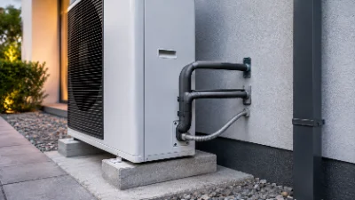

Leistung 4/10
Elektroanschluss für Ihre Wärmepumpe
Fachgerechter Elektroanschluss und sichere Inbetriebnahme Ihrer Wärmepumpe.

Wir übernehmen den fachgerechten Elektroanschluss Ihrer Wärmepumpe und sorgen für eine sichere und zuverlässige Inbetriebnahme. Dabei arbeiten wir eng mit Heizungsbauern und anderen Gewerken zusammen, um einen reibungslosen Ablauf zu gewährleisten.
Wärmepumpen benötigen je nach Modell einen eigenen Stromkreis, eine passende Absicherung und häufig einen speziellen Wärmepumpentarif Ihres Netzbetreibers. Wir übernehmen die technische Planung, die Anmeldung beim Netzbetreiber und die Verkabelung zwischen Außen- und Inneneinheit, damit Ihre Anlage von Anfang an zuverlässig läuft.